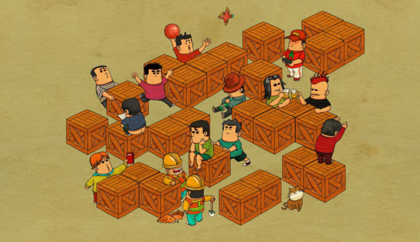
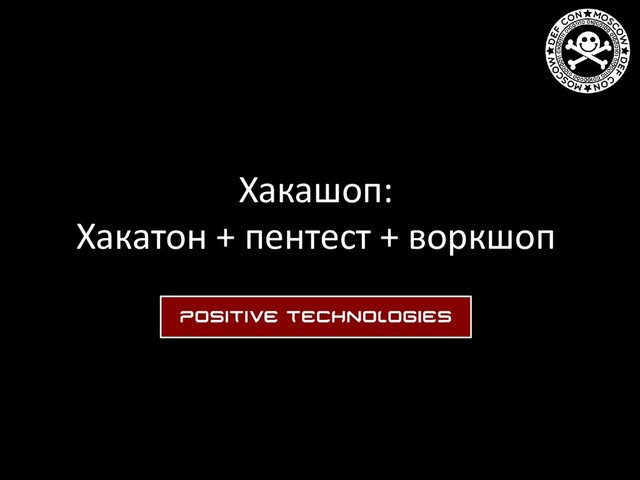

Lead Open Source Software Architect @ IBM (2019 - present)
Open Source Software R&D using various kinds of languages and technologies.
- Various engagements in largest Telcos, Banks, Retail, Natural Resources' and Government based companies in Russia, Central and Eastern Europe.
- Open Source Software webinars.
- Red Hat Certified Architect in Infrastructure Level II (200-054-419)
- Implemented internal FMECA-like Risk Management Toolkit (methodology and software).
- Implemented internal Cyber Polygons for SW delivery teams to test, learn and implement Open Source Software stacks.
- Had a talk "Building Bridges to Modern Infrastructure" at Open@Home Virtual Conference.
- Mentored several Engineers and Architects.
- Earned dozens of badges on Credly.
Team Leader @ Positive Technologies (2016 - 2019)
Flower
Open Source R&D using Clojure.
- Implemented integrations with task trackers (Jira, TFS, GitHub and GitLab).
- Implemented integrations with version control systems (GitHub and GitLab).
- Implemented integrations with messaging systems (Exchange and Slack).
- Created Automatic Teamlead software based on the Flower library to automate routines for the Application Firewall development team.
- Created Emacs task tracker client using the Flower library.
External activities - tech talks and publications (with continuation on right panel).
- Had a talk about the Flower library at the Clojure Meetup.
- Held ClojureScript Workshop at Positive Technologies HQ as a co-organizer and streamed it on YouTube.
- Participated in panel discussion on team processes automation at Yandex Team Leader Meetup.
- Presented Cisco ACI and PT AF integration at Positive Hack Days VI.
- Had a talk about Overlay Networks at Moscow 2600 Meetup.
- Had been interviewed about Clojure Vacancies at System Administrator Magazine
- Had a talk about using Java Cards from Clojure at the Clojure Meetup.
- Held Hackashop - Hackathon + Pentest + Workshop as a co-organizer.
%20063.jpg){kind=link}
PT Application Firewall
R&D using Python (Flask, Twisted), Groovy and JavaScript.
- Created domain-specific language and interpreter for network configuration.
- Created device package for PT AF integration with Cisco ACI.
- Designed architectural solution for data structure unification.
- Head of Application Firewall
UIBackend team which increased up to 10 members. - Participated in development of transparent proxy mode for PT AF.
- Participated in development of PT AF Cloud Solution.
{kind=link}
Senior Software Developer @ Positive Technologies (2015 - 2016)
PT Application Firewall
R&D using Python (Flask, Twisted), Groovy and JavaScript.
- Implemented Active Directory integration with PT AF.
- Created detailed reporting feature for PT AF.
- Took 3rd place in Digital Substation Takeover contest at Positive Hack Days V.
{kind=link}
Computer Science Lecturer @ Higher School of Economics (2016 - present)
Web Development course for Computational Linguists and Digital Humanities.
Engineer's Degree @ Moscow Institute of Electronics and Mathematics / Higher School of Economics (2010 - 2016)
Open Source Software R&D as part of term papers
using Python, Erlang and Clojure.
- CircuitryLib – Python library for modelling various circuit engineering systems.
- SpiritLevel – PoC for MicroPython device.
- ErlangIO – PoC for connecting Erlang VM with GNU/Linux kernel.
- mDSS – Decision Support System in Clojure.
- Cheque – Flask OCR RESTful service.
Engineer's Degree thesis real-life implementation and defense.
- Implemented WAF Cluster Configuration Management System.
- Successfully defended the thesis (10 out of 10).
Open Source Developer @ The Profitware Group (2012 - present)
Open Source Software
R&D using various kinds of languages and technologies.
- Created Leiningen plugins for OpenShift, Ring static extraction and version bumping.
- Created software for using Smart Cards (Java Cards) from Clojure
- Created Productivity Desktop Environment for Fedora GNU/Linux.
- Created ProfitPlatform-NG – Python and Erlang distributed RPC using RabbitMQ.
- Implemented finite lazy sequences and cycle/1 in Lisp Flavoured Erlang (LFE).
- Made minor improvements in SaltStack and Ferm.
- Implemented highlighting libraries generator for HyLang.
- Added HyLang support into Rouge and Highlight.js.
- Added support for some fields into Java GitLab API.
- Fixed incorrect behavior in Clomacs library for Clojure and Emacs integration.
- Created Checklist software - programmatic TODO lists with schedules, triggers and automation
- Created basic home automation system using LFE.
Software Engineer @ RosBusinessConsulting (2013 - 2015)
Quotes Monitoring
R&D using Python (Django, Tornado), JavaScript, Postgres and Oracle.
- Implemented and maintained different widgets and sections for Quote.rbc.ru.
- Created authorization, registration and Personal Cabinet sections from scratch and integrated them with Oracle database.
- Implemented and maintained back office infrastructure for the project.
- Migrated Spot Currency Market from Oracle to Postgres.
- Had a talk about client-server unified templating engine at MoscowPython 23.
Software Developer @ Bank's Soft Systems (2011 - 2013)
Online Banking Solutions
R&D using Delphi and JavaScript.
- Developed and maintained custom versions of online banking solution Private Client for several international and Russian banks.
- Implemented multiple HSA functionality (handwritten signature analogue) in standard version of online banking solution Private Client.
- Created user-friendly build system using Ant, Jython, Java and Javascript.
...Music and Open Source Software Creator / Wake up, Neo...
Disclaimer. The postings on this site are my own and don't necessarily represent IBM's positions, strategies or opinions.
GitHub profile
Soundcloud profile
LinkedIn profile
Facebook profile
Twitter profile
VKontakte profile
Articles @ ][akep Magazine


Meetups @ 2600